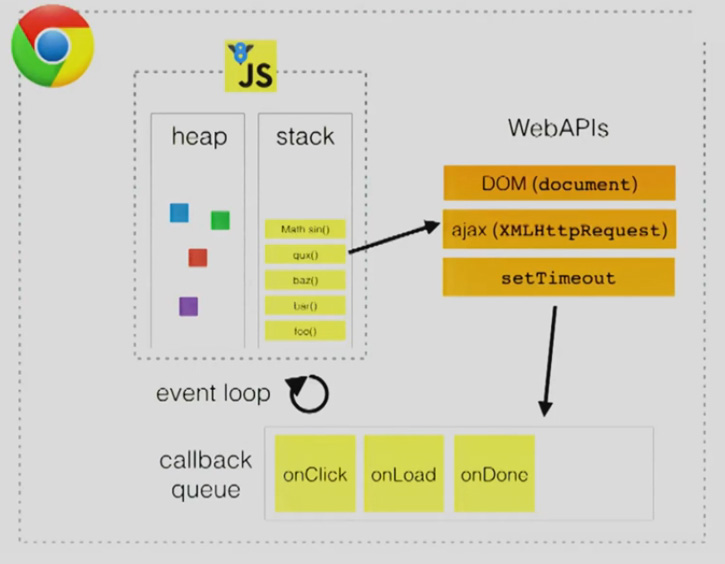
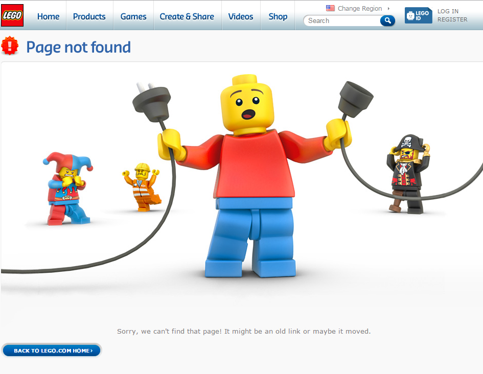

Confusion leads bugs, bugs lead to anger then we spend a lot of time to solve them
Stupid Computer! Why you can not run this f..cking code!
Please Computer if you run. I will buy you a new HDD
Ok Computer you won, I give up
Javascript != JAVA

How Javascript works
You said you know Javascript
Can you tell me more about Event Loop?
Event Loop
It is responsible to handle different events that occurs in the browser

What is a callback?
A callback or higher order function is a function to be executed after another function is executed
Callback Example:
var friends = ['Maria', 'Juan', 'Stacy', 'Andy', 'Rick'];
friends.forEach(function callback(friend) {
console.log(friend);
});
Example with setTimeout
function greeting () {
setTimeout(function() {
console.log('Hi everyone!');
}, 0);
console.log('Welcome to Coderoad');
}
Which is the order?
Prints Welcome to Coderoad then Hi everyone!
It just prints Welcome to Coderoad
Answer:
Prints Welcome to Coderoad then Hi everyone!
Another example of setTimeout
for (var i = 1; i <= 3; i++) {
setTimeout(function(){
console.log(i);
}, 0);
};
Which is the answer?
Prints 3, 2, 1
None of these
Answer:None of these
It will print 4, 4 , 4
Another example of setTimeout
var start = new Date;
setTimeout(function() {
var end = new Date;
console.log('Time elapsed: ', end - start, ' ms');
}, 500);
while(new Date -start < 1000) {
console.log('Riot time!');
}
What would it happend?
Do you think after 500 ms the time function will run?
Answer:NO
Because Javascript is single threat. When we call setTimeout the timeout event is queued, then the execution continues and finally the queued event is executed.
Ohhh .....!
Final Example
function riotTimer(){
console.log('1');
setTimeout(function(){
console.log('2');
setTimeout(function(){
console.log('3');
},1000);
console.log('5');
},200);
console.log('4');
}
Which is the order?
What does async or asynchronous mean?
The word 'asynchronous', aka 'async' just means 'takes some time' or 'happens in the future, not right now'.
Let's understand Async Functions:
If you call a function, your program simply won’t continue until that function returns
var result = multiplyTwoNumbers(5, 10);
console.log(result);
// 50 gets printed out
function multiplyTwoNumbers(a, b) {
return a * b;
}
What JavaScripters mean when they call a function “async” is that it can cause another function (called a callback when it’s passed as an argument to the function) to run later, from the event queue
downloadPhoto('http://coolcats.com/cat.gif', handlePhoto);
function handlePhoto (error, photo) {
if (error) {
console.error('Download error!', error);
} else {
console.log('Download finished', photo);
}
}
console.log('Download started');
Note that the handlePhoto is not invoked yet, it is just created and passed as a callback into downloadPhoto. But it won't run until downloadPhoto finishes doing its task, which could take a long time depending on how fast the Internet connection is.
This example is meant to illustrate two important concepts:
- The handlePhoto callback is just a way to store some things to do at a later time
- The order in which things happen does not read top-to-bottom, it jumps around based on when things complete
Handle every single error
There are different types of errors: syntax errors caused by the programmer (usually caught when you try to first run the program), runtime errors caused by the programmer (the code ran but had a bug that caused something to mess up), platform errors caused by things like invalid file permissions, hard drive failure, no network connection etc.
Error Handler Example:
var fs = require('fs')
fs.readFile('/Does/not/exist', handleFile);
function handleFile (error, file) {
if (error) {
return console.error('Uhoh, there was an error', error);
}
// otherwise, continue on and use 'file' in your code
}
When dealing with callbacks you are by definition dealing with tasks that get dispatched, go off and do something in the background, and then complete successfully or abort due to failure.
TODO
A team doesn't have just one hero...
We are all heroes
Thank You!